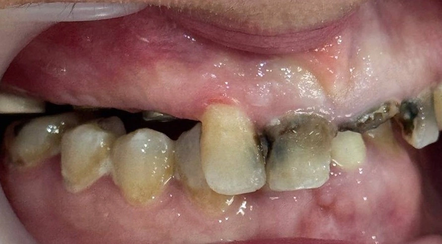

نسخه استخراجشده؛ ترجمه یا تأیید علمی انجام نشده است. وضعیت: captured
بیمار دندانهای خلفی و استاپهای اکلوزال خلفی را از دست داده است و فضای کافی برای رستوریشنهای خلفی نیست. VD را تغییر میدهی تا فضا فراهم شود و تماس دندانهای قدامی از بین میرود. یعنی کار را خراب کردهای؟

وقتی فضا نیست، اولین سؤال این نیست که چطور بسازی، بلکه این است که فضا کجا رفته. اولین واکنش ذهنی معمولاً این است که باید VD را اصلاح کرد تا فضا فراهم شود؛ اما در همین قدم اول نکتهای هست که اگر از کنارش رد شوی، تصمیم بعدی را اشتباه میگیری.
پشت آن هشدار یک فرض ناخودآگاه است: اینکه بیمار قبل از دست دادن دندانهای خلفی، اکلوژن قدامی نرمال داشته. این فرض گاهی اشتباه است. همانطور که مالاکلوژنها در افراد دنداندار شیوع قابل توجهی دارند، در کسی که ساپورت خلفی را از دست داده هم میتواند یک مالاکلوژن از پیش موجود باشد؛ مالاکلوژنی که زیر بایت فروریخته پنهان شده و حالا با تغییر VD خودش را نشان میدهد.
این را بهعنوان یک فاکتور همیشگی در ذهن داشته باش تا وقتی تماس قدامی در دندانی بدون هیچ نشانهای از سایش غیرعادی به نظر میرسد، گیج نشوی و آن را اشتباهاً به مداخلهی خودت نسبت ندهی.
در این بیمار بایت باز شد، اما نه به این معنا که VD افزایش یافت؛ VD به چیزی که برآورد میشد زمانی بوده، regain شد. این تمایز فقط یک بازی با کلمات نیست.
تصمیم درست، اصرار بر بازسازی یک «اکلوژن ایدهآل» نیست؛ پذیرفتن الگوی واقعی بیمار و طراحی رستوریشنها، از جمله شیبهای کاسپی، متناسب با همان الگوست.